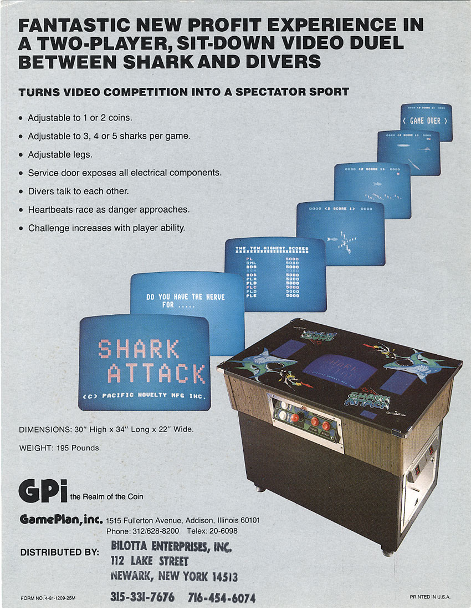
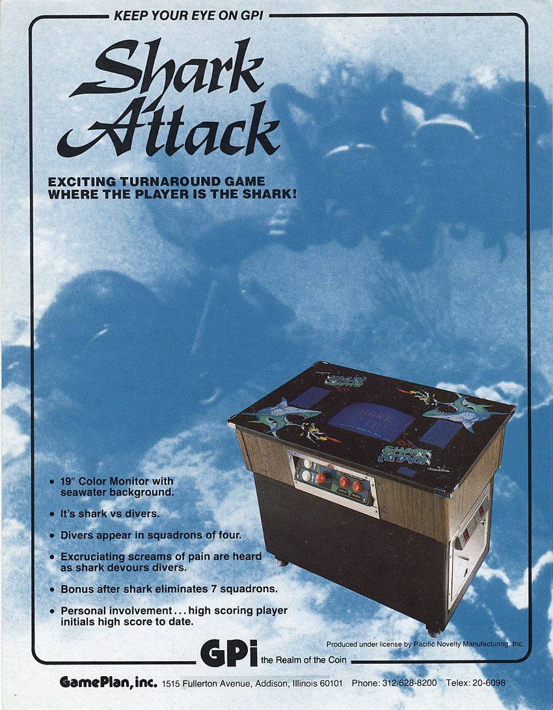
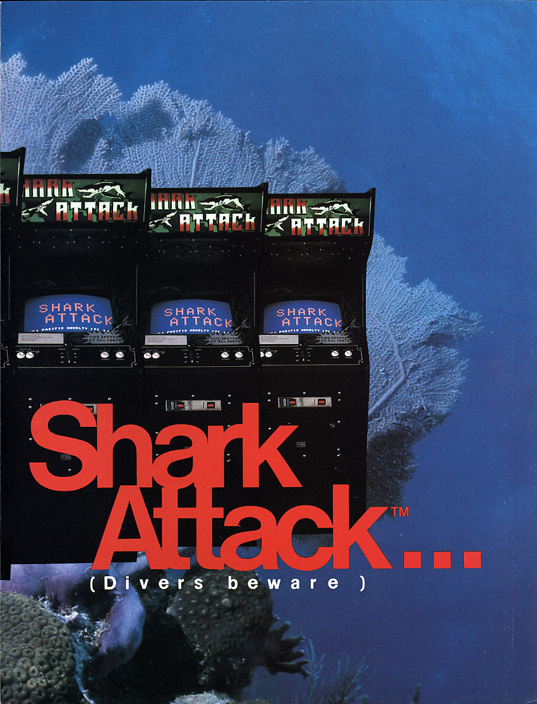
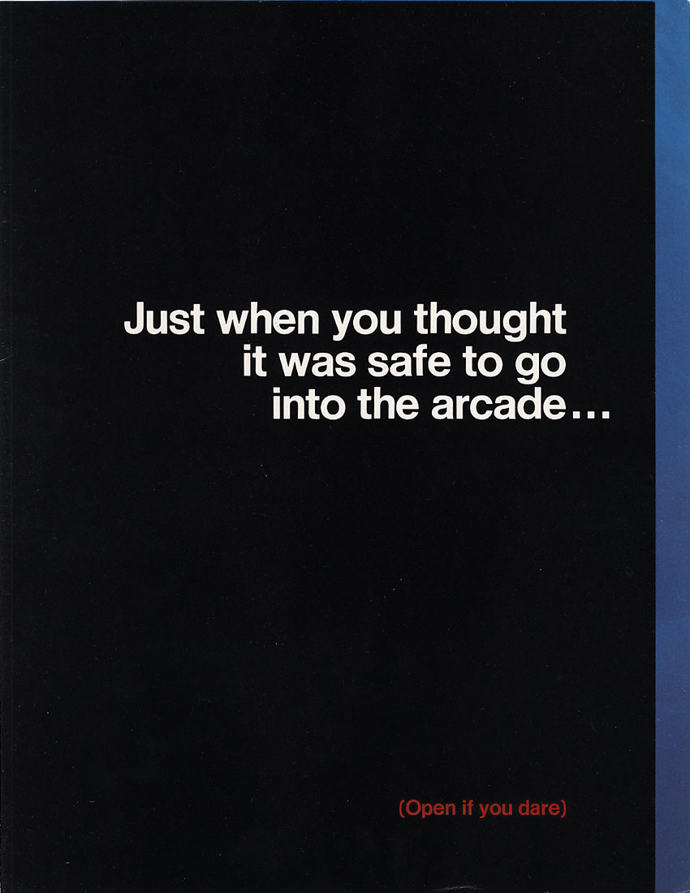
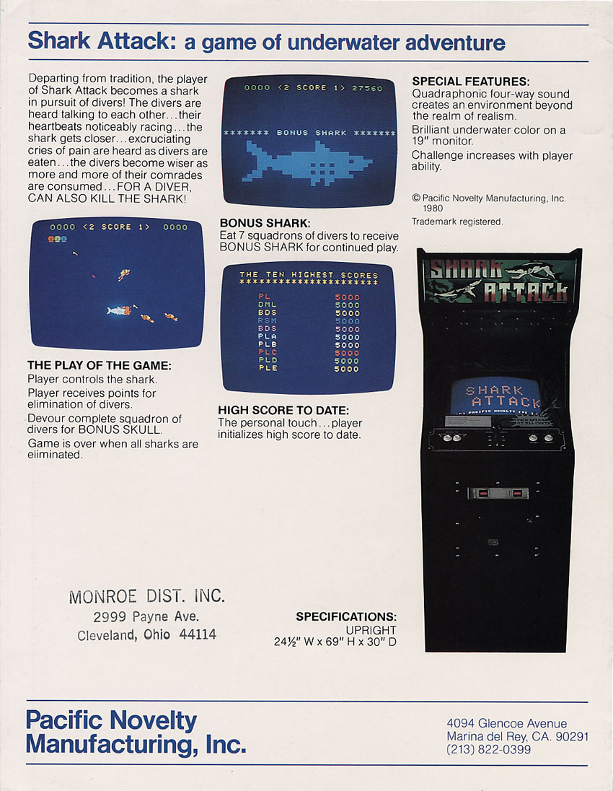
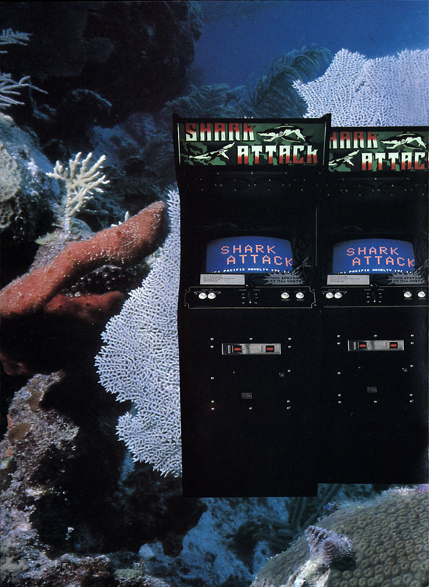

Shark Attack — a complete game record
Overview
Pacific Novelty Manufacturing, Inc. occupied a narrow but fascinating lane in early-1980s American coin-op history. It was not one of the giants, it did not leave a large catalog, and it never acquired the second life that later turned Atari, Williams, Sega, Namco, Nintendo, or even smaller survivors into permanent household names among collectors. Yet the company’s surviving games are too unusual to dismiss as filler. The player becomes the shark rather than the diver. A maze chase becomes a getaway-car pursuit with police chatter blaring from a tape loop. A tank game becomes a mine-clearing, wall-blasting military maze. A flea stars in a four-part cartoon structure that turns obvious influences into a strange but coherent variety-show cabinet.
That is why Pacific Novelty deserves more than a paragraph in a manufacturer list. It sits at the intersection of several themes that are central to the Arcade Obscura’s larger purpose. It represents the many small companies that surged into the coin-op business during the late-1970s and early-1980s boom. It shows how a small team could reuse engineering, cabinet logic and theatrical presentation across a tiny line of products without becoming stylistically repetitive. It preserves names—Brian Semler, Bernie Stolar, Philip Lieberman and others—that otherwise drift in and out of oral history without a stable place beside the work. And it illustrates how easily the record of a company can fragment: one trade-magazine profile here, a flyer there, a cabinet in a collector’s basement, a forum recollection, a tape mechanism inside a dead machine, a legal memory repeated in interview, a misleading catalog entry that turns out to be a false lead, and a few high-score traces showing that somebody somewhere kept playing the games after the market moved on.
The surviving Pacific Novelty story presently centers on four production videogames and one important prototype/show name: Deep Death, the 1980 AMOA title that became Shark Attack; Thief in 1981; and NATO Defense plus The Amazing Adventures of Mr. F. Lea (and His Friends) in 1982. The company also produced Computer Portraits, a coin-operated novelty imaging machine that does not fit neatly into the videogame category but tells us a great deal about the company’s taste for spectacle and non-standard amusement products.
The California corporate record fixes the legal starting point: Pacific Novelty Manufacturing, Incorporated filed its Articles of Incorporation on October 15, 1980. Contemporary trade reporting still treated Pacific Novelty as one of the smaller active manufacturers in February 1983, with Mr. F. Lea among current product being discussed. That gives us a confirmed minimum operating span of roughly 28 months—about two years and three-and-a-half months. The exact date on which the company legally dissolved or finally ceased operations has not yet surfaced, so the archive should not pretend to know a more precise ending than the evidence supports.
This is not a claim that Pacific Novelty secretly matched the giants in cultural impact or unit sales. It is a claim that the company’s products contained real design work, identifiable personalities, and a historically valuable set of ideas that are lost if the firm is reduced to a short manufacturer stub.
From route and distribution work to manufacturing
For once, the company’s beginning can be pinned to an exact legal date. California Secretary of State-derived corporate records show that Pacific Novelty Manufacturing, Incorporated filed its Articles of Incorporation on October 15, 1980, under California entity number 01027249, with Brian D. Semler identified in the surviving corporate index as president. That does not mean development began that morning—Deep Death was already far enough along to appear at the 1980 AMOA show—but it gives this history a much firmer starting line than the earlier versions of this article had.
The strongest contemporary snapshot of Pacific Novelty’s beginnings remains a Play Meter news item dated May 1, 1981, commonly titled “Pacific Novelty hits the water.” The article identifies the firm as Pacific Novelty Manufacturing, Inc., places it in Marina del Rey, California, and names Brian Semler as president. Most importantly, it preserves Semler’s own compressed explanation of how the company got there. According to the article, Semler had previously worked as a liaison involving Segasa and Williams Electronics, then entered distribution and route operation in the San Francisco Bay Area with his brother Larry Siegel. Pacific Novelty, in Semler’s telling, later licensed its game designs to other manufacturers before deciding to produce its own machines. Manufacturing was described as the “ultimate step.”
That sequence matters because it makes Pacific Novelty less mysterious. The company did not simply materialize in a garage one afternoon with a shark game and a brochure. Its leadership had already spent time inside the coin-op business, and that earlier experience helps explain several later traits. The company’s products feel like machines designed by people who understood route appeal and cabinet presence. The use of prerecorded chatter makes sense if one is thinking not only as a game designer but as a person who wants something on location to stand out across a noisy floor. The willingness to license or partner also fits an organization whose roots were broader than pure engineering.
Later oral-history material—most notably interviews with Bernie Stolar—adds another perspective. Stolar remembered moving into the business in 1980 and starting Pacific Novelty with Brian Semler. His recollections preserve valuable first-person detail, and they also connect Pacific Novelty to figures who would later become more famous elsewhere in the game industry. But one of the governing principles of this archive is that later recollection does not automatically erase contemporary documentation. If a 1981 trade report names Brian Semler as president, we keep that visible. If a decades-later interview remembers the company’s formation in broader or slightly different terms, we keep that visible too. Historical cleanliness is less important than accurately presenting what the evidence does and does not settle.
Pacific Novelty emerged at precisely the sort of moment when such a jump looked plausible. The late-1970s and early-1980s boom produced a swarm of manufacturers large and small, all hoping to find the next hit. Some were engineering-driven. Some were opportunistic. Some were clone factories. Some were distribution companies trying to move up the value chain. Some were already making non-video amusement equipment and saw videogames as an adjacent business. Pacific Novelty, with its mix of theatricality, licensing relationships and broader novelty-machine interest, fits awkwardly but revealingly inside that landscape.
When contemporary reporting and later oral history emphasize slightly different founding stories or corporate roles, the archive keeps both and labels them accordingly. The public-facing account should be accurate, not artificially tidy.
A company measured in months, not decades
Pacific Novelty Manufacturing, Incorporated files its Articles of Incorporation. This is the firmest presently documented starting date for the legal company.
Pacific Novelty publicly shows a prototype called Deep Death. Contemporary post-show reporting later identifies it as one of the more interesting machines on the floor.
Surviving Pacific Novelty sales material already uses the name Shark Attack, tightening the chronology of the title change and showing that the rename was already in play by 1980.
Play Meter reports that Pacific Novelty has begun producing Shark Attack. Brian Semler says the company has seven more games planned for the year.
Thief arrives and becomes the company’s most visible surviving game, aided by its cassette-backed police-radio soundtrack and unusually complete in-program credits.
NATO Defense and The Amazing Adventures of Mr. F. Lea (and His Friends) appear during the company’s final clearly documented videogame period.
Mr. F. Lea becomes Pacific Novelty’s last clearly documented videogame. A January 1983 exhibitor list still includes Pacific Novelty, and a February 1 Play Meter article discusses the firm among smaller manufacturers whose product a distributor was handling.
Cash Box reports that Bill Cravens, formerly Pacific Novelty’s sales manager, has joined Universal USA. This does not by itself prove the factory had closed, but it fits the picture of a company contracting or breaking apart in early 1983.
Later recollections describe liquidation or a sale involving Atari, but no contemporary dissolution filing or fully documented acquisition record has yet been recovered. For now, the responsible date range is incorporated October 15, 1980; operating at least into February 1983; exact end unknown.
Deep Death / Shark Attack
Shark Attack is the game that introduces almost every major Pacific Novelty habit at once. The theme is off-center, the sound system matters as much as the graphics, and the machine clearly wants to be noticed before a coin is even inserted. Rather than cast the player as a rescuer or hunter, Pacific Novelty made the player the monster. Divers descend into the water armed with spear guns. The player takes control of a great white shark and tries to hunt them before they can kill the shark or escape the encounter. That role reversal by itself would have made the game memorable on a 1981 floor crowded with space shooters, maze chases and abstract action games.
From Deep Death to Shark Attack
The title first surfaced publicly as Deep Death at the 1980 AMOA convention in Chicago. The importance of that fact goes beyond simple naming. It places the game in the company’s earliest visible product moment and proves that Pacific Novelty was willing to take a distinctively themed game onto the show floor while many larger companies were pushing more conventional premises. The prototype was not invisible. In a January 15, 1981 Play Meter issue covering the show, reviewer Tony Licata singled out Deep Death as one of four standout machines, grouping it alongside major contemporary titles such as Battlezone, Berzerk and Star Castle. That does not make Deep Death a giant hit, but it proves that the game was noticed by contemporary observers in very good company.
The rename to Shark Attack is one of those small chronology questions that reveals why the archive refuses to oversimplify. It is easy to write that Deep Death was renamed in 1981 and leave the matter there. But surviving flyer evidence carries a 1980 Pacific Novelty copyright while already using the name Shark Attack. That means the commercial name change was already in place by late 1980, even though 1981 trade reporting was still describing production and explaining the transition. The safe conclusion is not “renamed in 1981” but rather: Deep Death was the 1980 AMOA prototype name, and Shark Attack was already the active commercial identity by late 1980.






How the game actually works
The shark is controlled with an eight-way joystick and two buttons: Thrust and Munch. That combination matters. The machine is not built on the assumption that movement and automatic contact are enough. The player must manage motion and attack deliberately. Pacific Novelty’s own materials and technical summaries make clear that the jaws open and close under player control; the shark does not simply absorb divers by touching them. The need to thrust, position and munch gives the game a small but real layer of tactile identity beyond the premise alone.
The divers are not identical, mindless targets. They descend in groups, carry spear guns and actively threaten the shark. The player is therefore balancing offense and survival. A skilled run involves learning when to close in, when to back away, and how to use the controls in tight water rather than just sweeping the screen. The scoring rhythm reinforces that sense of escalating hunt. Early divers are worth modest values. Milestone divers increase sharply, and after a full cycle the player earns an extra shark. The result is a game that begins as a novelty premise and quickly reveals a more structured risk-and-reward curve underneath.
One of the better details preserved in secondary documentation is the way the game marks progress. Skull icons and diver sequencing are not mere decoration; they help the player read where he is in a longer cycle. That matters historically because early-1980s games often looked simpler than they were. A casual glance can make Shark Attack appear to be “eat divers, avoid spears.” In play, the machine is tracking a bigger rhythmic arc of squads, escalating values and extend-play logic.
The sound made the machine feel bigger
What truly distinguished Shark Attack from a merely odd premise was the sound design. Pacific Novelty combined game-generated effects with prerecorded diver voices and reactions delivered from tape. Period accounts and later technical descriptions vary in their exact wording about the tape implementation, and some retellings oversimplify it into a single neat claim. The archive therefore sticks to what matters most: the game used prerecorded human voices and effects as an active part of the attraction, and Pacific Novelty sold that as a feature.
That choice had several consequences. First, it changed how the machine advertised itself across a room. A shark game already invites visual attention; frightened or taunting human voices make it difficult to ignore. Second, it gave Pacific Novelty a relatively economical way to create a richer soundscape than simple beeps or short synthesized speech. Third, it established a design habit that would carry into later games such as Thief and NATO Defense. Pacific Novelty was not merely adding noise. It was trying to make its cabinets feel like events.
Later museum and enthusiast sources have described Shark Attack as an early or even first example of quadraphonic sound in a videogame cabinet. Pacific Novelty’s own marketing also emphasized the audio presentation. Absolute “first” claims are notoriously dangerous in arcade history unless the evidence is ironclad, but the safer statement is still impressive enough: multi-channel theatrical sound was central to how the game was presented and remembered.
Production, licensing and the famous “under one thousand” story
Shark Attack is also where Pacific Novelty’s production history becomes both most colorful and most treacherous. Bernie Stolar later told a story that has circulated widely: the shark theme allegedly attracted legal attention tied to Jaws, and a royalty arrangement was worked out that would begin only after the first thousand machines. In Stolar’s recollection, Pacific Novelty deliberately stopped just short of the threshold. Different retellings give different exact totals—sometimes 999, sometimes 990, sometimes simply “just under 1,000.”
Stolar’s recollection is strong evidence that production stayed below roughly 1,000 units. It is not yet proof of one audited exact total. Until factory records, distributor invoices or a contemporaneous production statement surface, numbers such as 990 or 999 should be treated as plausible retellings of a later memory, not as conclusively documented facts.
Licensing complicates the question further. Museum records identify Game Plan as a licensed manufacturer, and a July 1981 Play Meter item refers to Game Plan’s sit-down version of Shark Attack. The Museum of the Game also notes a Game World connection. This matters because “How many Shark Attack cabinets were built?” may not equal “How many cabinets were built by Pacific Novelty itself?” Any responsible history has to leave room for multiple production streams and multiple cabinet identities.
Reception and legacy
The game’s contemporary show reception was genuinely positive enough to matter, but it did not produce a long, stable secondary literature. That is one reason pages like this are needed. Today the game is remembered through a mixture of trade references, museum/database summaries, collector awareness and a tiny surviving population of dedicated cabinets and boards. Modern VAPS participation shows only a very small number of surviving original examples. That does not give us a historical sales total, but it does confirm that every survivor is important.
Shark Attack may never have become a mainstream classic, yet it remains one of the cleanest demonstrations of what Pacific Novelty could do: take a simple action premise, lace it with theatrical sound, and build a machine whose entire identity was stronger than the sum of its raw graphics. In a fuller game-by-game archive, Shark Attack would absolutely deserve its own separate page. Even inside the company article, it has already earned its space.
A family resemblance beneath the artwork
One of the easiest ways to misread Pacific Novelty is to focus only on the surface themes. Shark. Thief. Tank. Flea. Those do not look like siblings. Underneath the art and sound packages, however, there is a much clearer family story. Modern preservation and collector work has shown that Shark Attack, Thief and NATO Defense share a closely related three-board architecture. Converting one to another is not a casual plug-and-play swap, but the relationship is close enough that a modified set can be made to run all three, including alternate NATO Defense ROM material. Historically, that is an important insight.
A tiny company with limited engineering resources was not likely to invent a wholly new platform for every release. Reusing a core electronic foundation while changing software, cabinet art and sound content is exactly what one would expect. The preservation evidence confirms that expectation. This makes the company’s catalog feel much less random. The cabinets may have sold fantasy, crime, warfare and cartoon comedy, but the engineers were working with a family of shared ideas and hardware.
The sound systems tell a similar story. Shark Attack, Thief and NATO Defense all rely heavily on prerecorded audio. The exact content and mechanism details vary, yet the design philosophy is unmistakable. Pacific Novelty repeatedly chose long-form taped sound to create atmosphere that ordinary effects or short speech synthesis would not have delivered as cheaply or as richly. That decision says something about how the company wanted its cabinets to compete. A machine should be heard as well as seen.
Mr. F. Lea then becomes more interesting precisely because it partly breaks the pattern. It appears later, uses a different audio personality and sits at a moment when the company may have been under strain. Rather than weakening the family resemblance, the exception clarifies it. We can see what the earlier pattern was because the later game diverges from it.
- It helps explain how a small manufacturer could release several visually different games in quick succession.
- It turns modern collector board-conversion work into historical evidence about original engineering practice.
- It shows that Pacific Novelty’s catalog had more internal coherence than a simple title list suggests.
People behind the machines
One of the quieter goals of Arcade Obscura is to put names back beside work that too often survives only as a logo or ROM set. Pacific Novelty’s personnel record is incomplete, but it is still stronger than many tiny manufacturers of the period because a mixture of trade reporting, in-program credits and later oral history leaves several real anchors.
There were plainly more people behind the work than the surviving record currently identifies. Engineering, cabinet construction, art, sound recording, routing, sales and service did not happen by magic. But even the names above demonstrate why a small-company page matters. A company history without people is abstract; a people-history without machines is hollow. Pacific Novelty becomes interesting precisely where the two meet.
The “seven more games” problem
The most tempting clue in Pacific Novelty’s lost-project story is a single contemporary sentence. In its May 1, 1981 profile, Play Meter reported that the company had begun producing Shark Attack; Brian Semler then said, “We have seven more games planned for this year.” The statement records a real development intention, but it is a forecast, not a production ledger. It does not name any of the seven, describe how far work had advanced, or establish that all seven entered development.
The best-supported candidate among the company’s known titles is Thief. Its owner’s manual bears a 1981 Pacific Novelty copyright. A January 1982 Play Meter survey of products shown to operators and distributors at the 1981 AMOA show includes Thief, and trade coverage records Pacific Novelty showing it again at the 1982 AOE. Taken together, this makes Thief a strong candidate for the 1981 plan. The surviving sources do not explicitly connect it to Semler’s “seven,” however; it remains a well-supported inference, not a confirmed identification.
NATO Defense and The Amazing Adventures of Mr. F. Lea (and His Friends) are documented products from 1982. Either could have originated as an earlier plan and reached the market later, but no located document makes that connection. Computer Portraits is a separate category: a November 1981 trade report says Pacific Novelty demonstrated the coin-operated portrait machine to prospective distributors. The report establishes a real product, but does not establish that it was a video game or one of the seven. It stays outside the confirmed video-game catalog and outside the count unless new evidence clarifies Semler’s intended scope.
Confirmed: Semler publicly described seven additional games as planned for 1981. Strong candidate, not proven: Thief. Possible delayed candidates, unlinked: NATO Defense and Mr. F. Lea. Separate, uncertain category: Computer Portraits. Unidentified: the rest of the roadmap, along with the status and fate of every project not documented by a surviving product. The evidence does not support seven finished prototypes, seven lost releases, or a definitive list of seven titles.
The search boundary
Research checked the accessible 1980–1982 trade coverage, indexed flyers and manuals, surviving AMOA-related reporting, game-preservation catalogs and modern collection records available for this project. That search identifies no additional defensible Pacific Novelty video-game prototype by name. This is a statement about the public record examined, not proof that no other project existed. MAME and collector catalogs document known surviving or emulated games; they are not complete factory or prototype censuses.
The Maneater false lead
A manual-index entry once suggested that Maneater might be a Pacific Novelty game. The trail resolves to a different company: the game belongs to Project Support Engineering and dates to 1975. It is excluded from Pacific Novelty’s catalog. This correction matters because an unrelated title can otherwise become a false “missing game” simply through a database association.
The most useful future evidence would be a dated development list, engineering paperwork, a prototype board or cabinet with secure provenance, an operator flyer, or a firsthand account tied to surviving records. Until then, the “seven” remains a valuable measure of ambition—and a question whose individual answers are not yet known.
What happened to Pacific Novelty?
We can now be much more precise about the beginning than the end. The legal company was incorporated in California on October 15, 1980. It was still visible in the trade as an operating small manufacturer at the beginning of February 1983. So Pacific Novelty’s confirmed corporate-and-manufacturing story spans at least about 28 months. Everything beyond that minimum has to be separated into evidence, recollection, and unresolved corporate history.
This is still one of the least settled parts of the company’s story. The easy version is obvious enough: Pacific Novelty entered during the boom, released a handful of games, and disappeared as the market tightened. The evidentiary version is murkier. Later oral history, especially from Bernie Stolar, refers to a sale to Atari involving stock and a subsequent sour outcome as Atari’s condition worsened. That makes the claim impossible to ignore. But it does not magically become a fully documented transaction just because it is memorable.
Several caution flags are needed here. First, later first-person recollection can compress time and corporate detail. Second, popular shorthand such as “Atari went bankrupt” can blur more complicated real corporate events. Third, collector recollections describe Mr. F. Lea reaching the market as Pacific Novelty entered bankruptcy liquidation. A 2023 retrospective also says Stolar chose liquidation to satisfy creditors rather than a bankruptcy proceeding, but it supplies no contemporaneous filing or interview citation for that detail. The contemporary legal and trade record recovered for this project does not resolve the exact process. The account is worth preserving as a lead, not as settled corporate history.
Confirmed: incorporated October 15, 1980; documented in the trade through at least February 1983; California corporate status is now inactive. Reported later, not independently documented here: liquidation to address creditors; a claimed Atari stock or asset transaction. Still open: the last operating date, legal dissolution date and process, and whether an Atari deal occurred and in what form. Keep the liquidation and Atari accounts attributed to their later sources unless primary records are found.
This unresolved ending is one reason a public-facing “living archive” model is so appropriate for Pacific Novelty. Some subjects are locked down by abundant documentation. Pacific Novelty is not. The company sits close enough to the present that former employees or associates may still hold records, yet far enough in the past that those materials are easy to lose. The web article therefore becomes more than a summary. It becomes bait for the missing evidence.
Open research questions
What the Game Plan manual adds
The surviving Game Plan manual changes the level of detail available for Shark Attack. The flyers and trade coverage explain how the machine was sold and when it appeared. The manual explains how the machine was expected to behave in an arcade, how an operator set it up, what a player saw during a normal game, and how the sound system was actually divided. It is not merely a service document. It is a contemporary description of the product as a complete attraction.
Game Plan’s introduction calls Shark Attack a full-color one- or two-player action game and emphasizes the combination of video and audio. After power-up, the cabinet cycles through three attract-mode images. One asks whether the player has the nerve for Shark Attack. Another presents the high-score table, where a player exceeding 5,000 points can enter three initials using the joystick and Munch button. The entry window lasts sixty seconds. A simulated game then shows the shark swimming while a squadron of four divers swims and fires spears. The attract mode demonstrates the premise, danger and personality before a coin is inserted.
The manual also documents coin and start behavior. The cabinet accepts coin input regardless of its current condition, produces a coin sound and increments the counter. The standard operator choices are one play for one coin or one play for two coins. When enough credit exists, the start switches become active and the game resets the scores. These details help distinguish the documented production machine from later memories of how a surviving cabinet happens to be wired.
Turns, sharks and the seven-squadron cycle
The operator can select three, four or five sharks per game. A normal four-shark game begins with a score of zero and four shark symbols below it. Four divers appear, immediately begin firing spears and move in a random pattern. The player uses the joystick to reach an attacking position and repeatedly depresses and releases Munch to operate the jaws. The jaws do not remain active simply because the player holds the button down.
Each devoured diver increases the score. When the last diver in a squad is eaten, the machine awards a skull in the same color as that squad’s divers. The manual describes the skull’s eyes blinking left and right. After seven squadrons have been eaten, the machine displays Bonus Shark and adds another shark below the score. When a shark is struck by a spear, it breaks up in place, then the game reports the score and the number of sharks remaining before the next round begins.
The two-player game uses the same rules with alternating turns. On an upright cabinet both players use the common control set. On the cocktail version, the two sides have separate controls, and the computer alternates control while flipping the picture toward the active player. The cocktail cabinet was therefore not merely a cosmetic variation; its control arrangement and screen orientation were part of the intended product design.
Documented scoring and audio architecture
The manual supplies a complete seven-squadron scoring table. The first squad contains four divers worth 50 points each, for 200 points. The second is worth 100 points per diver, the third 200, the fourth 300, the fifth 400, the sixth 500 and the seventh 750. The cumulative diver totals reach 12,400 points. The corresponding skull bonuses are 200, 300, 400, 500, 800, 1,000 and 2,000 points, bringing the seven-squadron total to 14,400.
That 14,400 figure is the threshold for the Bonus Shark. After the seventh squad, scoring returns to the first squad’s 50-point value, but the manual says the entire game becomes greatly faster. The bonus therefore marks a transition into a more demanding cycle. The machine teaches the values, then asks the player to repeat the pattern under greater speed.
The sound section is unusually valuable. Shark Attack uses a prerecorded cassette together with two programmable sound generators. The cassette requires two speakers, and the programmable generators require two more. The cassette is an automotive-type stereo unit inside the cabinet, while an interface board switches it on and off and cues individual tracks.
The four channels are identified as follows. Channel A is the heartbeat sound from a programmable sound generator. Channel B is the repeating background sound, described as “Dum, Dum, Dum—dum,” also from a programmable generator. Channel C is diver chatter from the cassette player. Channel D is the divers’ screams, also from the cassette. The operator adjusts the balance between chatter and screams with the cassette controls, while the programmable channels have trimmer adjustments on the interface board.
This is stronger evidence than the broad later claim that Shark Attack had “quadraphonic” sound. It shows what the four channels actually did. The theatrical effect came from combining an electronic pulse and background pattern with human voices on separate recorded channels. It was not simply a stereo tape played over one cabinet speaker; it was a coordinated audio system with an adjustable mix.
The manual says the balance between chatter and screams was preset at the factory. If an operator wanted to eliminate the screams, the balance could be moved so that only chatter emerged. That small instruction confirms that the scream track could be intrusive in a location and that the audio experience heard by players could vary from one surviving cabinet to another.
Operator settings, diagnostics and preservation value
The documented operator options are limited but meaningful. One interface-board switch selects one or two coins per play. Another selects three, four or five sharks per game. A diagnostic setting places the machine into self-test. These controls show that the cabinet’s difficulty and service behavior were not entirely fixed by the game program. Operators could choose the starting supply of sharks, affecting how long a new player could remain in the game and how much value a location received from a credit.
The player interface settles a common ambiguity. The joystick is an eight-position control, allowing movement up, down, left, right and diagonally. Munch controls the jaws and requires repeated depression and release. Thrust controls movement speed: pressing it causes the shark to move more rapidly in any of the eight directions. Munch and Thrust are not two names for the same action. One operates the attack and the other changes movement response.
That distinction matters to restoration. A cabinet can have a working joystick and still feel wrong if the Thrust switch is dead, miswired or assigned to the wrong input. It can display the game correctly while losing the physical rhythm of opening and closing the jaws if Munch is treated as a simple held input. The manual gives restorers a contemporary behavioral target, not merely a list of parts.
Shark Attack contains a ROM self-test routine. With the diagnostic switch set, the game displays version information, the creation date, the creator line and checksum values for the installed EPROMs. The manual lists a January 12, 1981 version and separates cocktail and upright values where they differ. It warns that the numbers can change with revisions and that corrections shipped with a game should be retained.
For preservation work, this is a substantial gift. A surviving board set can be compared against documented version information instead of being judged only by whether it produces a picture. A restorer can record the ROM revision, compare the checksum, identify whether the board is configured for upright or cocktail behavior, and preserve that information alongside the cabinet.
The installation instructions establish the physical environment expected by the manufacturer. The cabinet requires 115-volt, 60-cycle AC, must remain within six feet of a grounded outlet and needs ventilation, temperature control, weight support and working clearance. The manual warns against removing the ground prong, notes that high voltage runs the monitor, and directs operators to power down before disconnecting plugs or replacing parts.
Those warnings help place the cabinet in the real arcade. Shark Attack was not a self-contained novelty board intended to be casually opened. It was a color CRT attraction with a high-voltage monitor, cassette mechanism, interface board, programmable sound generators, CPU board and multiple EPROMs. The complete experience depended on those elements functioning together.
That is why preservation should not reduce the game to a ROM file. Emulation can preserve the rules, graphics and some sound. It cannot by itself reproduce steering a shark with an eight-way joystick, pressing Munch repeatedly, hitting Thrust for a burst of speed, hearing diver chatter from a separate channel and watching the cocktail image flip toward the active player. The manual makes clear that Shark Attack was a system, not merely a program.
What the original record now allows us to say
With the original company research, trade coverage, flyer records, preservation work and Game Plan manual read together, Shark Attack can be described with much greater confidence than the short company-page section allowed. We know it was shown as Deep Death at the 1980 AMOA convention, that contemporary coverage noticed it, that Shark Attack was already the commercial name under a 1980 copyright, and that production was reported in 1981. We know the player role, controls, scoring cycle, bonus structure, cabinet formats, recorded audio and operator options.
We can also separate documentation from oral history. The manual directly supports the four-channel audio architecture, cassette and programmable sound generators, scoring table, three/four/five-shark option, seven-squadron bonus cycle, ROM diagnostics and upright/cocktail distinction. The under-one-thousand production figure and Jaws-related royalty story remain associated with Bernie Stolar’s later recollection. They are important, but they do not have the same evidentiary status as the contemporary manual.
The remaining gaps are not a reason to shorten the article. They are part of the history. We still need a factory production record, a reliable serial-number study, clearer documentation of the relationship among Pacific Novelty, Game Plan and Game World, project-specific credits for programmers and sound contributors, and a more complete record of surviving cassette hardware. A proper standalone page should make those questions visible while preserving everything already known.
Restoring the experience rather than only the cabinet
The manual suggests a restoration order that begins with the cabinet as a complete system. A technician first checks the shipping and cabinet condition, then confirms connectors, seated integrated circuits and the monitor display. Only after the attract mode is correct does the normal checkout proceed to coin input and play. That sequence is sensible for a surviving Shark Attack because a fault in one subsystem can disguise a fault in another. A missing cassette track, for example, should not be mistaken for a game-program failure, and a dead Thrust switch should not be treated as a board problem until the control wiring has been checked.
A good restoration record should therefore identify the cabinet format, board revisions, ROM checksums, monitor type, control layout, cassette unit, interface-board adjustments and speaker arrangement. It should note whether the machine is upright or cocktail, whether the cocktail image flips correctly, whether the four audio channels can be balanced, and whether the diagnostic routine reports the expected version. Photographs of the inside are just as valuable as photographs of the artwork. They preserve the physical evidence that later replacements or conversions may otherwise erase.
The manual’s language also reminds us that operators were expected to adjust the machine for a particular location. Volume balance, coin pricing and shark count were practical choices. A cabinet heard in one arcade may not have sounded exactly like another, even when both were factory-correct. That variation is part of the game’s history rather than an inconvenience to be edited away. The goal is not to create one imaginary perfect Shark Attack, but to document which version a survivor represents and how its presentation changed over time.
There is a preservation lesson in the game’s unusual combination of recorded and generated sound. Replacement cassette hardware can restore voices while leaving the programmable heartbeat and background sounds untouched. Conversely, a board repair can restore those electronic channels while the original tape mechanism remains silent. A complete restoration has to treat both sides of the system as historically meaningful. The diver chatter, screams, heartbeat and background pulse are separate pieces of the same designed event.
That is also why the surviving technical documentation deserves to remain attached to the public history. The service instructions are not merely for people repairing a cabinet today. They show what the manufacturer thought mattered: the attract mode, the score-entry routine, the seven-squadron cycle, the adjustable shark count, the four audio channels, the diagnostics and the safe operating environment. Those choices reveal how Game Plan expected operators and players to encounter Shark Attack in 1981.
They also provide a useful counterweight to later mythology. A remembered production number can travel from interview to forum post to database until it looks like a factory fact. A manual behaves differently. It preserves small operational facts that are difficult to embellish: the number of divers in the attract display, the 5,000-point high-score threshold, the sixty-second initials timer, the 14,400-point bonus cycle, the selectable number of sharks and the exact separation between heartbeat, background, chatter and screams. None of those details proves how many cabinets were sold, but together they anchor the game in a real production design and make the surviving machine much easier to identify and preserve.
For historians, that specificity is the difference between a description and a reconstruction. It lets us ask whether a cabinet’s controls, sound mix and attract behavior agree with the period documentation. It lets a collector report a meaningful revision rather than simply saying that a board “works.” And it lets readers understand why Shark Attack mattered: it was a small arcade production whose identity lived simultaneously in its premise, its timing, its cabinet formats, its scoring rhythm, its tape-backed voices and the physical habits demanded of the player.
That combination is what makes the game worth preserving as its own subject. Shark Attack is not important because it became a household name. It is important because it captures a particular moment when a small manufacturer could turn a simple idea into a complete location-based performance, then leave behind just enough evidence for later players and researchers to recover the shape of that performance.
The surviving record is therefore not a thin footnote to Pacific Novelty. It is a compact case study in arcade design, manufacturing, operation and preservation.
It also explains why the game deserves a page that stands on its own rather than another paragraph buried inside a company profile.
That is the purpose of this standalone record.
It keeps the documented facts together, marks the uncertain claims honestly, and leaves room for the next surviving cabinet, manual correction, photograph or firsthand account to improve the history.
For now, the evidence is finally gathered in one place today.
Selected evidence and further reading
- California corporate filing index — Pacific Novelty Manufacturing, Incorporated. California Secretary of State-derived record: Articles of Incorporation filed October 15, 1980; entity number 01027249; current status inactive; Brian D. Semler identified as president. Open the California-record summary
- Play Meter, February 1, 1983. Contemporary distributor coverage still discusses Pacific Novelty among active smaller manufacturers and names Mr. F. Lea among the represented product mix. This presently sets the strongest documented minimum endpoint for company operations. Open the specific page
- Cash Box, February 5, 1983. Industry personnel note identifies Bill Cravens as formerly Pacific Novelty’s sales manager when reporting his move to Universal USA—useful evidence that the company’s staff structure was changing rapidly by early 1983.
- POP-A-BALL trademark and surviving 1990 flyer. These correct a misleading modern database grouping: the federal mark was owned by SMS Manufacturing Company, Inc., and the flyer identifies SMS Manufacturing Corporation in Lakewood, New Jersey. These later machines should not be used to extend the original Pacific Novelty company timeline. Trademark record · Specific flyer record
- Sungold modern catalog entry. The Museum of the Game currently lists a 1991 coin-drop machine under Pacific Novelty. No contemporary source or continuity record has been recovered, so the attribution remains uncorroborated and is excluded from the 1980–1983 product count. Open the 1991 slot-machine list
- Play Meter, May 1, 1981 — “Pacific Novelty hits the water.” Contemporary company profile identifying Brian Semler as president, Marina del Rey, the 1980 AMOA showing, the Deep Death prototype name, Shark Attack production, Semler’s business background and the seven-game planning statement. Open issue in the International Arcade Museum eLibrary
- Play Meter, January 1, 1982 — post-AMOA new-product survey. Lists Thief among titles shown to operators or distributors at the 1981 AMOA show. This supports the date and public presence of Thief; it does not expressly connect the game to Semler’s seven-title roadmap. Read the specific page PDF
- Play Meter, May 1, 1982 — AOE coverage. Reports Pacific Novelty showing Thief at the show, confirming the title remained a marketed product. Open the issue page
- Play Meter, November 1, 1981 — Computer Portraits. Reports a coin-operated portrait machine demonstration to prospective distributors. This confirms a product announcement, not that the machine was a video game or part of the seven-title plan. Read the specific page PDF
- Later company-ending accounts. A 2023 retrospective says Stolar liquidated the company to satisfy creditors but does not cite contemporary records for the decision. Treat the liquidation detail as a later account, not legal proof. Read the retrospective
- Play Meter, January 15, 1981 — 1980 AMOA review. Tony Licata’s show coverage placed Deep Death among four standout games. Valuable for contemporary reaction rather than later commercial mythmaking. Open issue in the International Arcade Museum eLibrary
- Pacific Novelty flyer records — link directly to the specific titles.
- Museum of the Game / KLOV-style database entries. Useful for basic game records, licensing notes, control summaries, cabinet-survivor awareness and collector census context.
- Thief arcade credits. MobyGames preserves the game’s unusually rich movie-style credit set in a convenient reference form. Specific MobyGames credits page
- NATO Defense owner’s manual. Primary technical source confirming operator settings, service approach, cabinet details and the leaderless autoreverse cassette mechanism. Specific manual copy
- Modern Pacific Novelty hardware preservation work. Collector experimentation demonstrating Thief, Shark Attack and NATO Defense on a modified common board family. Useful as preservation evidence, not as proof of original factory-supported interchangeability. Specific collector thread
- Mr. F. Lea rarity and record material. Museum/database entries plus collector discussion preserve the carefully qualified sub-100 production lead and modern rarity context. Specific museum entry
- Bernie Stolar interview material. Important first-person oral history for the company’s formation, Shark Attack, Thief, NATO Defense, Computer Portraits, the Jaws/royalty story and the claimed Atari transaction. Use with the strengths and limits appropriate to oral history. Arcade Attack Retro Gaming Network interview
- Computer Portraits preservation thread. Modern collector documentation helping establish the machine as a real Pacific Novelty product with surviving examples. Specific forum thread
This is still a reader-facing web article, not a research dump. A production edition could push citations down to individual paragraphs or notes. The design intent is to keep the reading experience strong while leaving the evidentiary trail easy to follow.